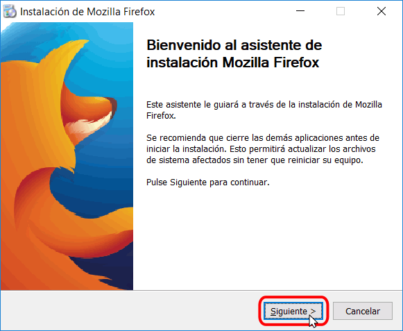
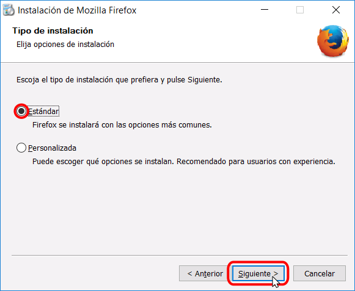
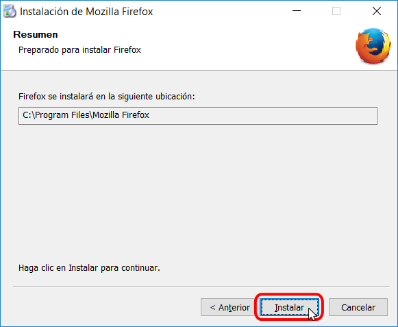
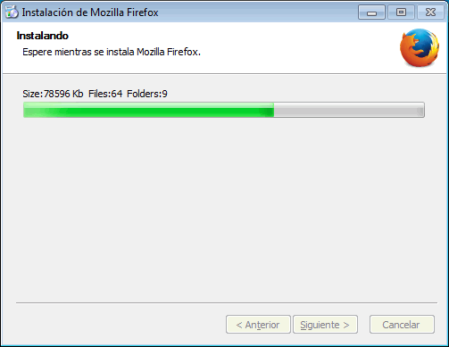
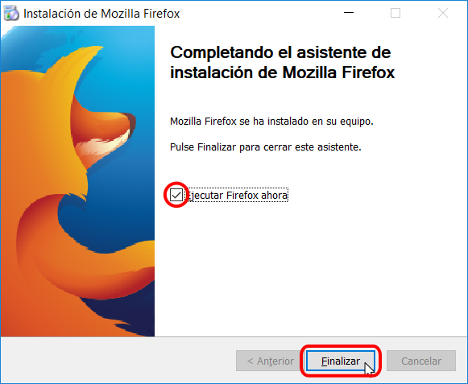
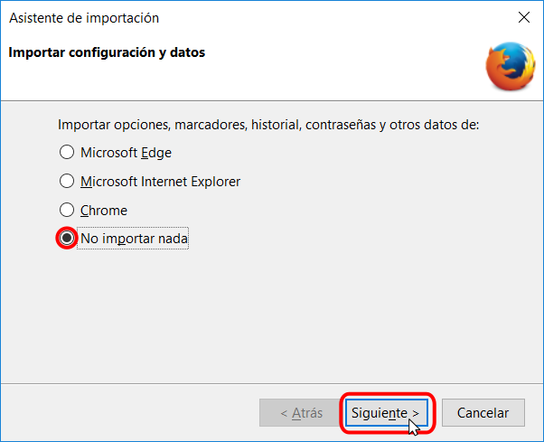
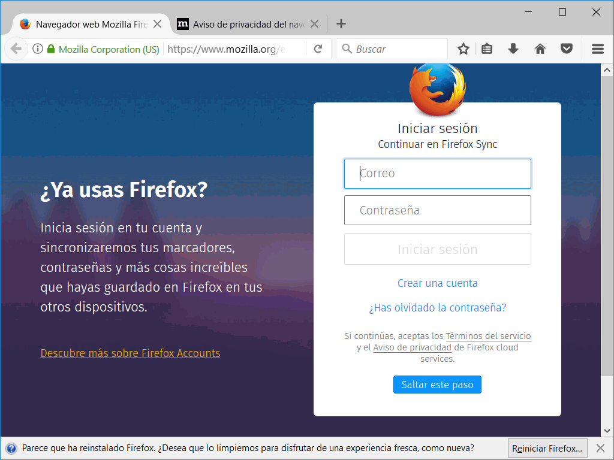
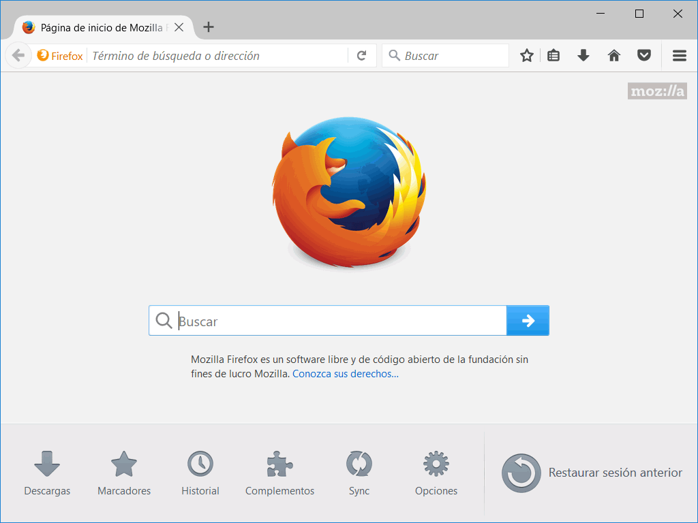

Firefox es el navegador web creado por la Fundación Mozilla. La página web oficial de la Fundación Mozilla es https://www.mozilla.org/es-ES/.
La página web oficial de Firefox en español es https://www.mozilla.org/es-ES/firefox/new/, desde la que se puede descargar Firefox.
Existe otra página de descarga, https://www.mozilla.org/en-US/firefox/all/, que ofrece versiones de Firefox para diferentes sistemas operativos e idiomas (por ejemplo, variantes de español para Argentina, Chile, México o España).
Actualmente (agosto de 2017), la última versión publicada de Firefox es la versión 55.0.3, publicada el 25 de agosto de 2017.
En cdlibre.org hay una sección dedicada a navegadores web, con información detallada sobre la última versión publicada.
Nota: Las capturas siguientes corresponden a Firefox 55 en Windows 10 de 64 bits. Versiones posteriores pueden ser ligeramente diferentes.
Haciendo doble clic sobre el instalador de Firefox, se pone en marcha el asistente de instalación.
La primera pantalla anuncia que se va a instalar Firefox. Hay que pulsar el botón Siguiente para instalar el programa o el botón Cancelar para no instalarlo.

La segunda pantalla permite elegir el tipo de instalación. Para este curso es suficiente elegir la opción Estándar:

La tercera pantalla permite elegir el directorio de instalación y si Firefox será el navegador predeterminado.

A continuación, se instalará Firefox (la instalación dura unos segundos).

Una vez completada la instalación, se muestra la pantalla final.

La primera vez que se instala Firefox en un ordenador, se ofrece la posibilidad de importar la configuración y los datos de otros navegadores instalados en el sistema. Salvo que se quieran importar específicamente, se aconseja no importar nada.

La primera vez que se abre Firefox tras la instalación, se muestra una página de bienvenida al programa

Las siguientes veces que se abre Firefox, se muestra la página de inicio predeterminada de Firefox.
